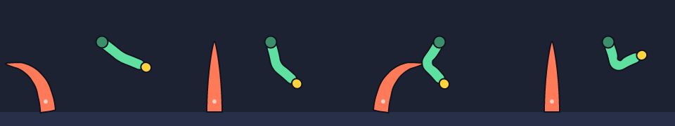
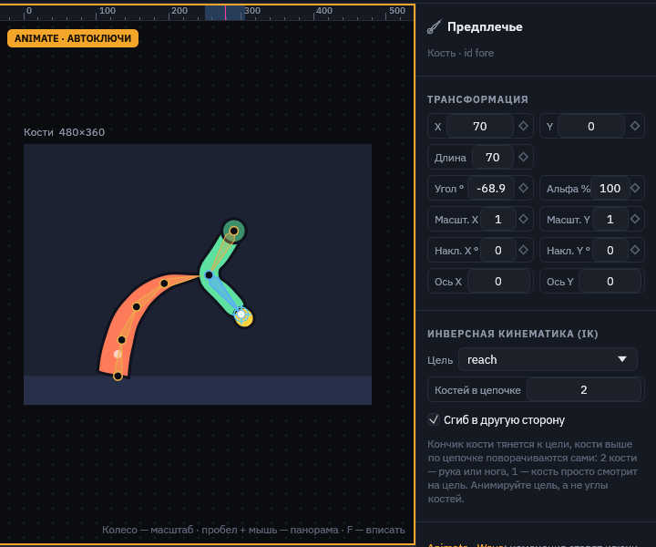
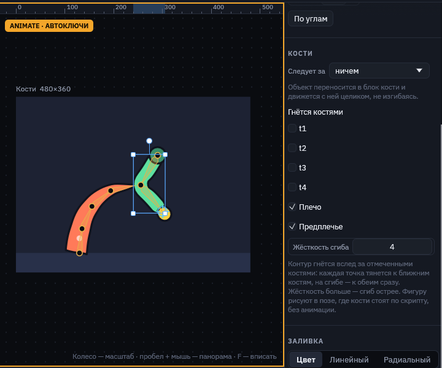

Кости и IK
Кости — скелет для анимации. Объекты внутри кости едут вместе с ней. Фигура со списком костей гнётся: её контур изгибается вслед за костями, а сама фигура остаётся вектором с той же заливкой, обводкой и тенью. IK (инверсная кинематика) сгибает руку или ногу так, чтобы кончик дотянулся до цели: вы двигаете цель, а углы суставов редактор считает сам.

bones.msc после экспорта: щупальце гнут четыре кости, рука тянется к цели через IK, локоть не теряет толщину.Инструмент «Кость»
- Нажмите B или кнопку с костью на панели инструментов и тяните по холсту от сустава к кончику.
- Новая кость сразу выбрана. Следующая протяжка от её кончика продолжает цепочку: новая кость становится её дочерней и начинается точно на кончике. Так плечо, предплечье и кисть делаются тремя протяжками подряд.
- Клик без протяжки ставит кость длиной 60 по направлению выбранной.
- V возвращает выделение.
Как двигать кости
Кости рисуются поверх сцены тонкими ромбами с кружком сустава. В игру и в экспорт они не попадают.
- Тело кости — потяните, и кость повернётся вокруг сустава. Объекты внутри и фигуры, которые она гнёт, пойдут за ней.
- Сустав (кружок у начала) — перемещает кость.
- Кончик выбранной кости (белый кружок) — поворачивает и меняет длину. В Animate меняется только угол.
- Кость с IK — протяжка двигает её цель, и вся рука следует за курсором.
Кость выбирается кликом по её линии: ловится в нескольких точках экрана от неё, даже если сверху лежит фигура.
IK: рука тянется к цели

reach. Плечо и предплечье поворачиваются сами, чтобы кисть была на цели.- Цель — любой объект не внутри цепочки, обычно пустая группа. Кнопка «Создать цель на кончике» делает такую группу в нужном месте и сразу подключает её.
- Костей в цепочке — сколько костей вверх по иерархии поворачивает IK. 1 — кость просто смотрит на цель (глаз, пушка). 2 — рука или нога, решается точно. 3 и больше — хвост или щупальце, решается пошагово.
- Сгиб в другую сторону — колено или локоть выгибается на другую сторону.
- Если цель дальше, чем достаёт цепочка, рука вытягивается к ней прямо.
Анимируйте цель, а не углы: ключи на позиции цели в Animate, и рука сама проходит все промежуточные позы. IK работает и в Design: подвиньте цель, и вы сразу увидите позу.
Фигура гнётся костями

Выберите фигуру и в разделе «Кости» отметьте кости, которые её гнут. Каждая точка контура следует за ближними костями: вдали от сустава — за одной, возле сустава — за обеими. Чтобы изгиб был гладким, контур перед изгибом режется на короткие кривые, поэтому даже прямоугольник гнётся дугой.
- Жёсткость сгиба — насколько быстро кость перестаёт тянуть точки с расстоянием. 4 (по умолчанию) — сустав как у локтя или колена. 2 — мягкий изгиб по всей длине, для щупалец, хвостов и травы. 6–8 — почти шарнир.
- Повороты костей смешиваются как повороты, а не как точки, поэтому на крутом сгибе фигура не худеет и не перекручивается.
- Фигура гнётся от той позы, в которой нарисована: это поза костей по скрипту, без анимации. Сначала поставьте кости вдоль фигуры, потом отмечайте их.
- Ключи на позиции самой согнутой фигуры не нужны: её форму задают кости.
Объект едет с костью
Для частей, которые не гнутся (кисть, глаз, шлем), в разделе «Кости» выберите «Следует за» нужную кость. Объект перенесётся в блок кости в скрипте и будет двигаться и поворачиваться вместе с ней. На холсте он останется на том же месте: редактор пересчитает его координаты в пространство кости. «Следует за: ничем» возвращает его на верхний уровень.
Как кости выглядят в скрипте
// рукав гнут две кости
rect sleeve at 360 120 size 140 30 r 15 fill #5ee0a0 skin upper fore
bone upper "Плечо" at 290 120 len 70 {
bone fore at 70 0 len 70 ik reach flip {
ellipse hand at 76 0 size 30 28 // едет с предплечьем
}
}
group reach at 410 190 // цель руки
anim Reach 2s loop {
reach.x 0: 410 | 1: 300 | 2: 410
}| Запись | Где | Пояснение |
|---|---|---|
bone id at x y len L rot R { … } | строка объекта | Кость от точки at по направлению rot, длиной len. Дочерняя кость пишется в блоке и обычно стоит на кончике родителя: at L 0. |
ik цель | кость | Кончик кости тянется к началу объекта цель. |
chain N | кость с ik | Сколько костей поворачивает IK, по умолчанию 2. |
flip | кость с ik | Сгиб в другую сторону. |
skin кость кость … | фигура | Кости, которые гнут контур. |
skin-sharp N | фигура | Жёсткость сгиба, по умолчанию 4. |
В анимации у кости ключуются rot, len (arm.len), положение и масштаб, как у любого объекта. Ошибки скрипт показывает сразу: несуществующая цель, цель внутри своей же цепочки, skin со списком не из костей.
Веса считаются автоматически по расстоянию до костей. Ручная покраска весов и вывод скелета в Godot — следующие шаги.